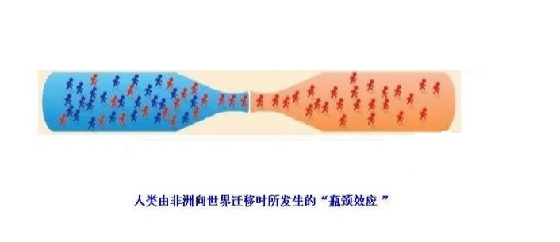
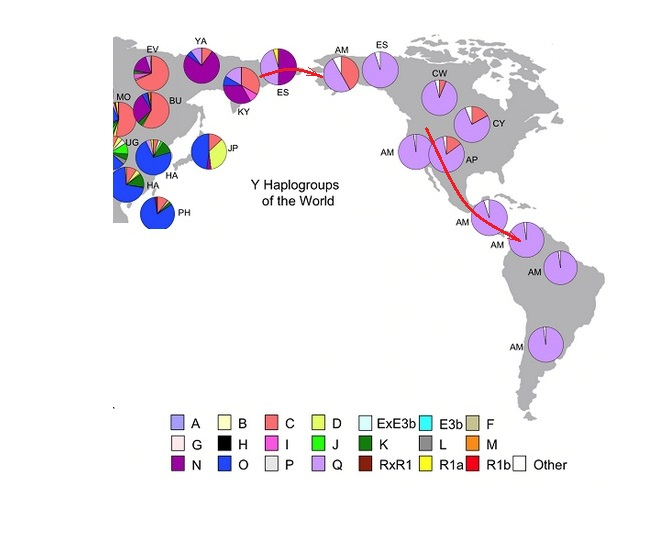

|
回主页
第5节 从伊甸园走向世界
第1小节 走出非洲
2005年，启动了一项多国合作的庞大项目：“基因地理工程”
（Genographic Project）。这项计划由美国国家地理学会、IBM和韦特家庭基金会共同出资4000万美元，全球有10个研究机构参与了研究。到2010年，他们在全球范围内收集10万人的DNA，并基于这些资料，描绘出了人类的迁徙地图。
一．寻找人类的伊甸园
当分子人类学家们从现代人的DNA中找到了Y染色体亚当和线粒体夏娃以后，自然就会想到“他们的生长地”在什么地方？这能够用DNA解码来寻找吗？答案是肯定的。
1.人类迁徙过程中的瓶颈效应（Bottleneck effect）

图5-1 人类迁徙过程中的瓶颈效应图
人类在迁移时，往往只有一部分人向外移民，移出的族群比原住地的族群总是要少，族群“多样性”多的总是移民原居住的地方。例如上图中左边的瓶中有两个族群，通过瓶颈后，只有一个族群了。
从美洲图中也可以明显地看出，向美洲迁徙的族群，Y染色体单倍群多样性在迁徙中减少，南美洲比北美洲更少。这是因为在几千、上万年前，人类的迁徙并非容易的事，往往只有少数人勇敢地踏上了旅途。Y染色体的单倍群，在亚洲西伯利亚地区，有Q、C、N、O等6种，到了北美洲只有了Q、C两种，南美洲只剩下了Q一种，这是非常明显的“瓶颈效应”。

图5-2 美洲的Y染色体单倍群多样性在迁徙中减少
2. 人类的“伊甸园”在东非
根据“基因地理工程”结果，绘出了一个世界各DNA单倍群分布图。这个分布图划分的单倍群比较细致，因此，比图5-2有更加复杂的色彩。根据上面“瓶颈效应”的原理，哪里单倍群的种类更多，哪里就是人类的原居住地，结果这个地点被划定在非洲东部，大约处于埃塞阿比亚和肯尼亚接壤的东非大裂谷区域。

图5-3 世界各DNA单倍群分布和人类“伊甸园”位置图
3.东非的原住民和其他现代人没有“进化程度”的差别
在这个区域中，现有原住民的种族类别确实很多，各族群的语言、习惯、装饰等都有很大区别。由于这个原因，此地区已经成了人们乐于前往的旅游胜地。在过去长期的岁月中，他们居住的地区与世界文化几乎隔离，因此显示他们过著十分原始的生活，文化水准很低，但这绝不表示他们和其它发达国家的人们，有着“进化”的差异。
在网络上可以看到许多他们的生活照片，他们和我们在DNA上，并没有大的差别，我们不可以因为他们物质生活的落后去歧视他们。从他们身上采集过不少DNA样本，以DNA解码的人类学观点来看，他们和外部的非洲人、以致全世界人，只有仅仅千分之一、甚至万分之一的DNA不同，他们就是和我们同样的现代人，没有进化的差别。他们和我们同是Y染色体亚当和线粒体夏娃的后裔，是我们父系的也是母系的亲人。
二．最早现代人的身影
1.奥姆人化石（Omo 人）
1967年，正是在上面所说的人类“伊甸园”地区，地处埃塞俄比亚东非大裂谷的奥莫（Omo）河附近（东经35度55分，北纬5度24分），古生物学家理查德·利基(Louis .Leakey)和他的团队，发现了两个古人类的头骨化石[注释1]。这两个被称为Omo I和Omo II的化石，是从地下深处发掘出来的，他们被保存在埃塞俄比亚的国家博物馆中。化石所处的地区现在设置为奥莫国家公园，并于1980年，被联合国教科文组织宣布为世界遗产遗址（World Heritage Site）。
早期，对于Omo I和Omo
II的化石年代有不同的认识。2005年2月，《自然》期刊报道了对Omo I和Omo II的化石年代重新测定的结果。由澳大利亚国立大学的伊恩·麦克杜格领导的团队，使用氩同位素测定法，通过同位素的衰减度确定化石沉积的年代，结论是：Omo I和Omo
II均生活在距今19.6万年前，正负误差5000年，因此Omo I和Omo II 是迄今发现的最为古老的现代人化石。以前误认为Omo II显得更久，其实是因为骨骼来自不同族群[注释2]。

图5-4 Omo 人头骨化石和形象复原图
在人类学上，对现代人（智人）的起源，一直存在着多地区起源和非洲起源两种假说。目前，人类学家普遍认为，在距今20万到25万年前，现代人最早出现在非洲东部，即“非洲起源说”。但还有少数科学家支持“多地区进化说”，认为现代人是在欧、亚、非地区各自起源的。而“非洲起源说”缺乏至关重要的化石证据，在相当长一段时间里，科学家没有发现现代人起源的关键阶段，距今30万到10万年前，在非洲的现代人的遗骨化石。直到1997年埃塞俄比亚的“赫图头骨化石”（Herto skulls）出土，提供了距今16万年前的化石证据。而奥莫化石年代确定的距今19.5万年前数据，无疑为“非洲起源说”提供了新证据。也是对分子人类学的线粒体夏娃理论和Y染色体亚当理论，给予了有力的支持。从DNA解码和化石两个方面的证据，印证人类学家的普遍共识：现代人是在20万到25万年前出现在非洲东部的。可以说，Omo人是全世界现代人的祖先。科学家们依据头骨化石，制作出Omo人的面貌复原模型（图5-4）。
头骨的面貌复原工艺技术，在现代的法医学、人类学、和电脑三D等技术的支持下，已经发展得相当成熟。目前采用的泥塑面貌法是首先制作一个头骨的石膏模型，根据解剖学参数，在石膏模型上打下许多孔，在每个孔中插入一根木条，使木条向外突出的长度等于该处的软组织厚度。再在眼窝处用塑料眼球填充，面部的肌肉则用一层层堆积起来的陶土表现，直到所有的木条被覆盖，最后加上五官，进行整体修饰。对这种技术的验证，是让这方面的专家不看头骨原人的照片，制作出其人的面貌复原模型，再与此人的照片进行对照，技术精湛的专家能够制作出非常逼真的面貌复原模型。
所以，专家们制作出的Omo人的面貌复原模型，应该是可信的。
从图中可以看到，他外表和我们没有区别，他的皮肤可以说是由全世界人的各种皮肤颜色调和出来的颜色，模型设计成这样的颜色是有他们的道理。在太阳照度越强地区的人越黑、越弱地区的人越白。我们祖先的后裔中，有一些在太阳照度强的地区过了20多万年，因此变得更黑，这就是非洲人；祖先的另一些后裔们，移民到太阳照度弱的地区，生活了几万年以后，变得更白，这就是欧、亚人。这种变化并不是“进化”，没有‘进’、‘退’的因素，而仅仅是对生活环境的适应。
2. 最早的南方移民
距今25万到20万年前，当现代人的祖先出现在非洲的“伊甸园”—东非大峡谷以后，他们可能在那里繁衍了几万年，成为了一个小的群体。然后，他们开始了向南部和北部迁徙的旅程。
科学家在非洲南部的顶端、南非开普敦东部的尖峰地区（pinnacle point），发现了最早现代人移民的遗迹。考古发掘的成果，证明即使在冰川时期，这里仍有丰富的植被和养料充足的洋流，为生活在这里的少数古现代人提供了足够的食物。
 图5-5 现代人最早向南、北方的移民路线 图5-5 现代人最早向南、北方的移民路线
近几年来，南非开普敦大学和美国亚利桑那州立大学的研究团队，对尖峰地区岩洞里的人类遗迹进行了很详尽的研究。确定曾经在这里居住的古现代人历史，可以追溯至164，000年前甚至更早。
他们是这样来描述的：从南非海岸Pinnacle Point的第5、6两个地点发掘出来的，约7万1千年前的石器工具，以前未能确定它们的技术先进性。现在，我们确定这项技术主要是用热处理石头的方式，来制作石头刀片（bladelets）（一种精细的石器部件，如梭镖的箭头，倒钩）。这样精细的石器部件，是用来组合抛射武器（如梭镖等）的重要部件，是古人使用当时先进武器的标志，这已经是考古界的共识。

图5-6：7万多年前的细石刀片和可能用它们来组合成的梭镖
当我们看到这些描述时，不能不为当时古人的智慧赞叹，即使今天的我们，也很难采用这样的技术去制作出有石头利刃的梭镖、弓箭。7万多年前的古人不是未进化好的人类，他们和我们的不同，仅仅在于科学技术积累的程度不同，在智慧方面，一点都不比我们差。
3.早期向北方的移民
在非洲的另一端，也发现了早期移民的遗迹，这就是被称为赫尔托人的古现代人（Herto ） 。
1997年，在埃塞俄比亚的首都Addis
Ababa 的东北225公里阿瓦什河畔（ Awash
River）的一个名叫赫尔托（Herto ，225 KM northeast of Addis Ababa）的小村庄附近，考古学家蒂姆.怀特Tim White和他的伙伴们，从远古的泥沙堆中发现了三个人类头骨化石，其中一个成年人的头骨化石，相当完整。科学家们对这个头骨做了头骨的面貌复原，发现他的面貌极象标准的现代人，也和Omo人极为相似。同时出土的，还有数量惊人的河马骨头、鱼骨化石和640余件加工过的石器，包括石斧、石片和极其罕见的石刀。随后，对化石挖掘现场上下两层以及四周的土壤进行了放射元素半衰期年代测定（Radiometric dating），断定化石形成的年代是在16万年前。这是目前所看到的最古老的，往北方向迁徙的现代人移民。
在非洲大陆以外发现的现代人的遗迹，比起这个遗迹，就晚了5、6万年。
4. 非洲以外古现代人的身影

图5-7 在以色列发现古人化石的地点
上世纪中期，在以色列拿撒勒市（Nazareth）附近的卡夫泽洞穴（Qafzeh Cave）里，发现了10具古人化石。在海法市南边的20公里处的斯虎尔山洞里（Es Skhul cave ）也发现了10具古人的化石，其中有7个大人，3个儿童。从他们的头骨特征，可以认定他们是和Omo人一致的，也和现代人的头骨特征是一致的。
他们生活的年代经多种测年法鉴定，确定在10万年前左右。考古学家还从这些遗骨出土的状态环境，发现一些遗体有特别埋葬的处理，表现出殡葬可能有某种宗教仪式，或者情感的表达方式。例如，1971年，在卡夫泽洞穴中发现的第11号遗骨，年龄大约在13岁左右，他被埋葬在岩床上挖掘的一个坑内，在他的双手中，还有一个“赤鹿”的鹿角。可以想象到，当他的父母埋葬他时，将心中的悲伤、将浓浓的爱都化作对他到另一个世界去的美好祝福。
在两个洞穴中，都发现了用贝壳做成的串珠，很可能是当时女子们佩戴的项链，从这些存留遗迹和物品的发现，可以推断出他们的文化有着长足的进步。这是在非洲之外发现的最古老的现代人的化石，他们应该是最早走出非洲的移民。

图5-8：
10 万年前人类的贝壳制成的项链串珠[注释3]
然而，在这一地区和周围地区，再没有发现10万年以后的，几万年期间古人生活的痕迹，他们的后代消失了。他们是怎样来到这里的？他们的后代又到哪里去了呢？为了解开这个谜底，考古学家们从10万年前的自然环境和地理环境入手，进行了合理的分析。
前面说过，16万年前的赫尔托古人的发现，已经证明了我们的祖先们，从他们的发源地东非大裂谷区，到了非洲的北部。然而，在以后3万多年里，他们却无法向更远的地方迁移。因为在他们的东边是海洋，在他们的北边是撒哈拉大沙漠，上千公里的沙漠比海洋的阻隔更大。近来，通过考古地理的研究资料，建立了计算机数学模型，发现在12万5千年前，北非的气候环境有很大的改变，在以后的几千年中，沙漠变成了绿洲，绿洲上充满了飞禽走兽，展现了一片生机。这样巨大的变化，给当时的人们带来了机会，他们一定会向着生机盎然的北方，一步步的前进。经过几千、上万年时间、多少代的历程，终于离开了非洲，进入了亚洲，到达了现今的以色列地区，并在这里定居和繁衍。
然而，两、三万年以后大自然的变化，又给移民的后代们带来了厄运。包含以色列地区在内的西北亚和北非地区，又进入了干旱和沙漠化的时代。当古人发现雨水越来越少，草地干枯，动物灭绝时，他们已经无路可进，也无路可退了。这曾经兴旺发达的移民社区，终究完完全全地消失了。
|